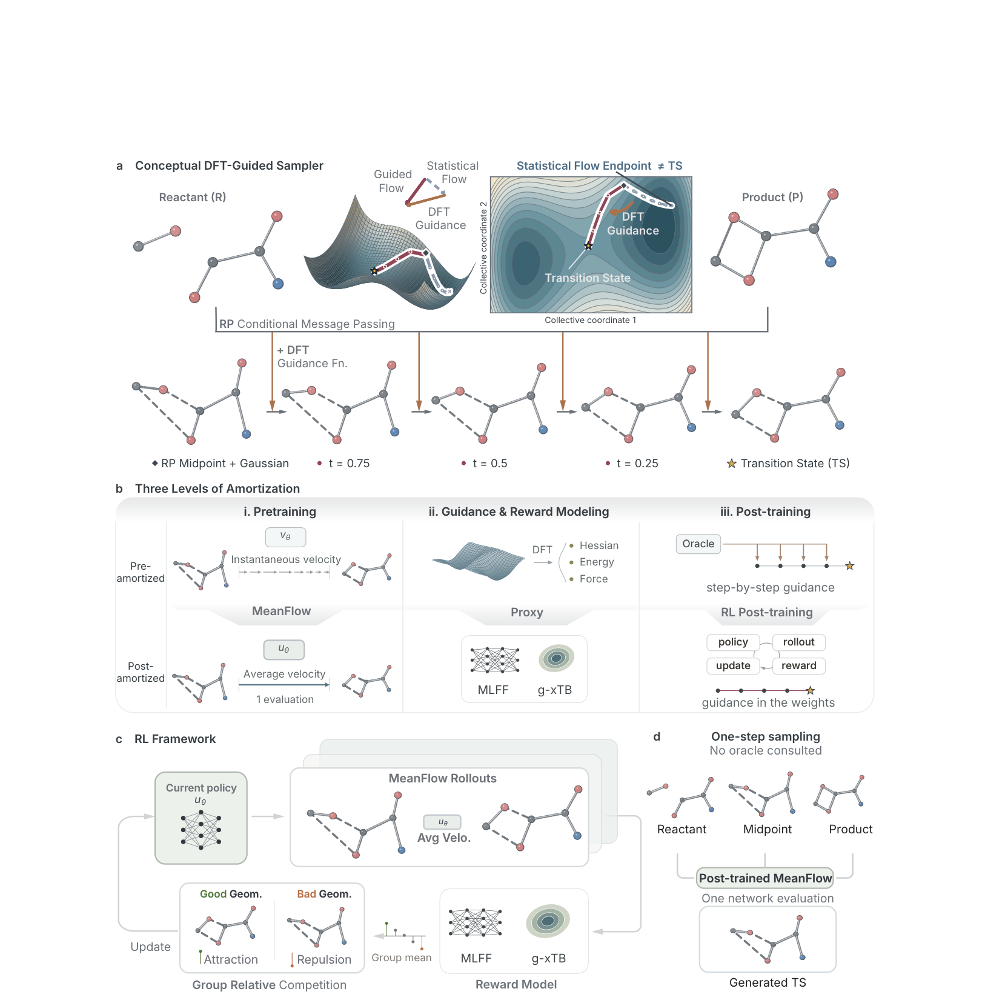
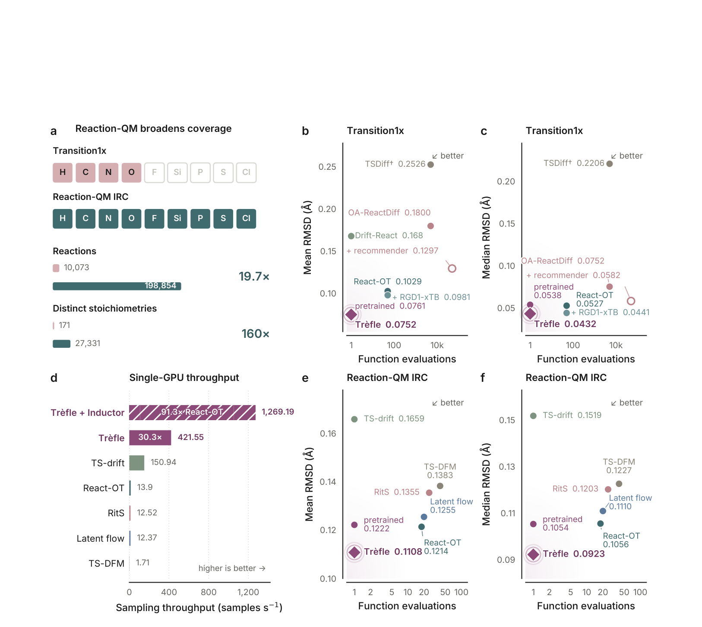
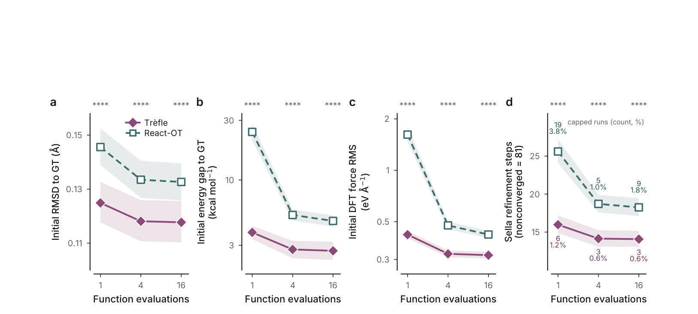
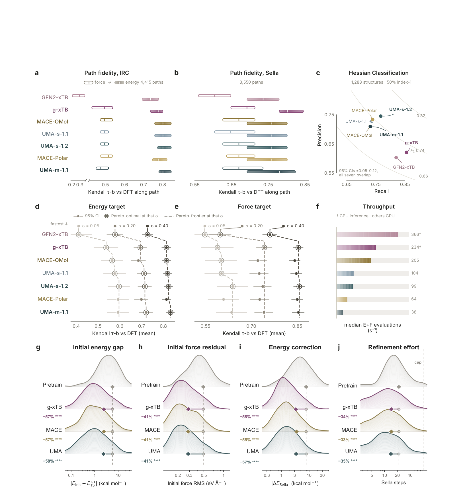
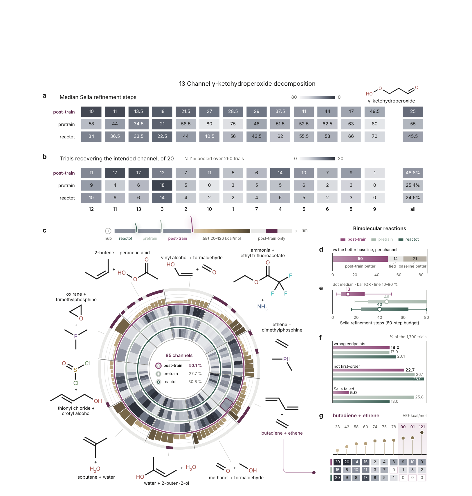
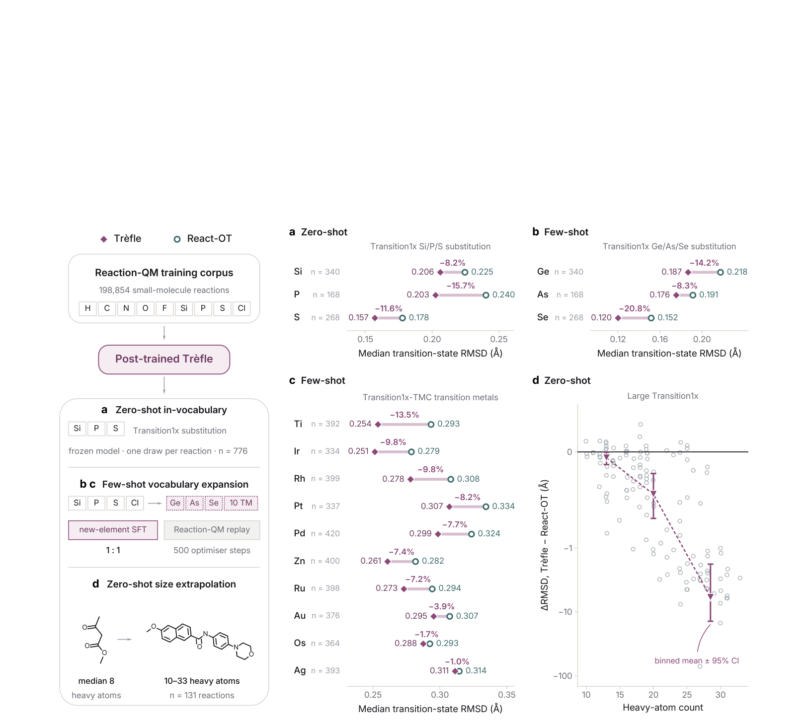

Trèfle：怎样把过渡态搜索的物理要求学进一个单步生成器
论文原文 ↗原文：Yunyang Li、Zechang Sun、Kuang Yu、Wen Yan、Mark Gerstein、Hung Q. Pham，Reinforcement learning amortizes transition-state physics into one-step flow models（强化学习将过渡态物理条件摊入单步流模型），arXiv:2609.32073v1。本文依据本地54页预印本，包含正文、扩展数据与补充材料；首页arXiv标记为2026年9月25日，文内日期为9月29日。
要计算一个反应的势垒，通常先要找到过渡态：它是反应物变成产物时必须跨过的势能面“山口”。这个结构不会像稳定分子那样停在那里，计算程序必须主动寻找它。常见路线是先在反应物和产物之间建立路径，再反复用量子化学能量与原子力修正路径；也可以直接给出一个初猜，让鞍点优化器从附近寻找山口。初猜的质量决定了后面需要多少计算，也影响程序会不会走进错误的反应通道。
已有生成模型能够根据反应前后的结构预测过渡态初猜，但还存在两层负担。一层是模型本身往往需要几十次网络调用，逐步移动原子；另一层是坐标看起来像训练集中的过渡态，并不保证它在真实势能面上接近鞍点。如果每一步再调用密度泛函理论（DFT）纠正生成方向，开销又回来了。Trèfle的思路是把两类反复工作尽量移到训练阶段：学会一次给出完整位移，再让廉价物理评估反馈“哪些初猜更值得生成”。部署时，模型只需一次网络计算；生成后的DFT精修和反应路径认证仍然保留。
一、方法怎样做：先学会一步生成，再让同一反应的候选按物理质量竞争
从反应端点出发，学习整段坐标移动
模型的输入是反应物和产物的三维原子坐标，以及各原子的元素。两端必须做过原子映射，也就是明确反应前后的哪两个位置对应同一颗原子；否则程序连“这颗氧要从哪里移到哪里”都无从判断。端点还要经过坐标预处理，使相对姿态合理，避免把整体转动或平移误当成化学变化。
作者把两端中同一原子的坐标取平均，形成一个“端点中点”结构，再加上小幅随机扰动作为生成起点。中点让初始结构靠近这次反应的几何范围，扰动则使同一反应能得到不同候选。扰动的整体平移被去掉，因此改变的是原子之间的相对位置。这个中点本身未必是过渡态，它只是模型开始工作的地方。
训练首先使用带有DFT过渡态标签的反应数据。通常的流匹配把起点到目标之间的坐标变化写成一条人工运输路径，训练网络预测“当前位置下一小步该往哪里走”；使用时便需要多次询问网络、逐步积分。这里的路径是生成模型的数学构造，不是真实反应动力学轨迹。
Trèfle采用的**MeanFlow（平均流）**改为学习一段生成过程的平均移动速度。在覆盖整段过程时，它相当于直接预测从起点到候选的完整位移，于是一次输出每个原子的移动向量，就能得到全部候选坐标。训练并非简单把端点中点回归到标签：它还要求不同时间区间的移动预测保持一致。作者用AlphaFlow课程训练，先学习较容易的局部移动，再逐渐转向整段移动，以减少一开始就学习复杂一致性关系的困难。负责输出位移的GeoditE网络具有几何等变性，即输入分子整体旋转后，预测位移也随之旋转，模型不依赖某个任意的坐标轴方向。（PDF第16—17、41—44页）

图1｜把反复工作放在哪个阶段（原文 Figure 1，PDF第4页）。b 展示从多步移动到平均流、从DFT评价到廉价势能评估、从逐步引导到训练权重中的偏好；c 是候选生成—评分—更新的循环；d 是部署时一次生成。a 的逐步DFT引导只是概念示意，论文没有实施这一采样器的定量比较。
“更像过渡态”怎样变成可学习的反馈
只学坐标，模型可能把结构生成得很接近标签，却留下较大的残余原子力；只追求低力，又可能退回反应物或产物这样的稳定极小值。因此，作者用固定的廉价势能评估器给完成的候选打一个综合分数，再开展强化学习后训练。这里的强化学习很直接：一次反应是任务，一个完整候选是模型的动作，物理评分就是这次动作的反馈。
评分包含五方面要求。首先，候选的原子力要小，表明接近驻点，即能量对位置的一阶变化接近零。其次，关键原子对的距离要处在反应两端之间，避免生成器退回稳定端点。第三，要尽量满足一级鞍点条件：去掉整体平移和转动后，只有一个方向的势能向两侧下降，其余方向向上弯曲。程序通过Hessian——能量对坐标的二阶导数矩阵——检查这种曲率。最后，能量应高于两端但不至于异常高，原子也不能挤到明显不合理的接触距离。
这些条件一起描述“靠近这次反应内部的山口”，而不是简单偏好低能量分子。能量、力和曲率由g-xTB半经验电子结构方法或MACE、UMA机器学习力场提供，后两者通过学习原子环境近似势能。它们在训练时充当评估器，生成网络只接收最终分数，不需要对评估器反向求导。这使曲率分类等难以直接求梯度的条件也能进入反馈。
实际更新时，每个反应生成48个扰动候选，只在这个反应内部比较好坏。这是必要的：不同反应的能量和力尺度不同，不能用原始分数把简单反应的普通候选和困难反应的好候选混排。高于组内平均水平的候选吸引模型向它们靠近，低于平均水平的候选则推动模型避开相应生成方向；同时限制模型不要过度偏离预训练能力。由于这个一步生成器没有可直接计算的候选概率密度，作者采用的是对好坏样本进行加权回归的更新，不依赖通常策略梯度中的概率比。（PDF第18—20页）
一个氧转移例子怎样走到最终认证
论文补充材料给出了环状过氧磷烷向乙烯转移氧的例子。目标氧需要同时靠近乙烯的两个碳，形成环氧的两根C—O键，并与供体片段断开两根键。模型接收原子已映射、姿态已整理的反应前后结构，从端点中点出发，一次预测所有原子的位移，得到候选。部署时不再调用训练用的物理评估器。
随后候选交给DFT和Sella鞍点优化器精修；收敛后计算振动频率，检查是否恰有一个显著虚频。虚频表示有一个不稳定方向，结构沿它移动会离开山口。再沿**内禀反应坐标（IRC）**向两个方向走到稳定结构，确认它们分别对应指定反应物与产物。这样，生成候选、找到鞍点和找对反应通道才连成完整流程。
在这个真实案例中，后训练使四条监控成断键距离的平均绝对误差从0.259降到0.122 Å，DFT精修从31步缩短到14个接受步。后训练结果通过了频率和IRC检查，预训练结果精修后没有连接到目标端点。这个例子说明模型改善的不只是外观：协同成断键位置更合适，后面的高精度搜索也更容易走对。（PDF第49、53页）
二、主要发现：更快生成只是起点，关键是后续搜索确实获益
1. 一步生成保住几何精度，物理后训练带来额外改善
作者在Transition1x和更大的Reaction-QM数据集上比较预测坐标与参考过渡态的差异。Reaction-QM的IRC子集包含约19.9万条反应、九种元素，统一实现的比较使用19,883条留出反应。主要指标是均方根偏差（RMSD），把预测与参考结构对齐后，统计坐标差的典型大小，数值越低越接近参考。论文按全部坐标分量归一化，与按每原子位移报告的RMSD相差一个√3因子。

图2｜能否少调用网络而不牺牲精度（原文 Figure 2，PDF第6页）。b、c 和 e、f 的横轴是每个候选的网络调用次数，纵轴分别是平均与中位坐标误差，左下方更好；d 比较单GPU候选生成吞吐量。Reaction-QM的比较采用同一实现与划分；Transition1x的部分文献基线使用不同划分或多候选排序协议。
在Reaction-QM上，多步React-OT的平均RMSD为0.1214 Å；直接换成一步MeanFlow略退到0.1269 Å，课程训练补回大部分差距。完整Trèfle在物理后训练前为0.1222 Å，后训练后降到0.1108 Å，中位数为0.0923 Å。这个消融很重要：一步化主要负责节省调用次数，精度超越多步对照的额外收益主要来自后训练，而非只换一个网络架构。（PDF第33页扩展表3）
相同单GPU、批量16的测量中，Trèfle每秒生成421.55个候选，18次网络调用的React-OT为13.90个，约相差30.3倍。这是从模型输入到候选坐标的生成速度，不包括后面的DFT、振动和IRC认证。常规准确率比较也是每反应一次确定性中点预测，未从48个候选中择优；48候选竞争发生在训练阶段。

图3｜差距是否仅来自少给对照计算预算（原文 Figure 3，PDF第7页）。同一500条留出反应上，横轴为1、4、16次网络调用；从左到右比较初始坐标误差、DFT能量差、DFT残余力及Sella精修步数，均越低越好。失败精修记为81步，阴影为均值的95%置信区间，失败次数也标在最后一栏。
继续增加推理预算，两种方法主要在1到4次调用之间获益，4到16次趋于平缓；Trèfle在所测预算下始终占优。它的一步预测已经比React-OT的16次调用更接近参考坐标，而所需精修工作量与后者相当。这把“模型快”进一步接到了“初猜有用”上。
2. 廉价评估器的偏好，能够转化为独立DFT上的改善
要用廉价势能指导训练，不能只问它在平衡分子上是否准确，还要问它能否在鞍点附近正确区分好坏。作者建立ReactOracleBench，收集DFT鞍点精修轨迹、IRC路径和同一反应的一组生成候选，比较不同评估器对能量与力的排序，以及对一级鞍点的识别。排序之所以重要，是因为后训练需要的是“这组候选中哪个更好”，并不要求代理能量与DFT绝对值完全重合。

图4｜训练用的近似物理是否能改善高精度搜索（原文 Figure 4，PDF第9页）。上部比较七个评估器与DFT的排序一致性、曲率分类和能量—力吞吐；排序一致性越高越好。下部按图内 g—j 标签，比较预训练模型与g-xTB、MACE、UMA后训练模型的初始能量差、残余力、精修能量修正及Sella步数，分布向左移动表示改善。原图图注的子图编号与图内标签有错位，这里按图内指标解释。
筛选后，作者分别用g-xTB、MACE和UMA给同一个预训练模型开展后训练，再在同一200条固定留出反应上用独立DFT评价。三种奖励来源得到近似的收益：初始DFT能量差下降57%—58%，残余力下降41%，精修能量修正下降55%—58%，含失败惩罚的平均精修步数下降33%—35%。这说明改善跨过了训练用的代理势能面，进入了高精度电子结构评价。（PDF第8—9页）
更低残余力意味着结构离驻点更近，更小能量修正和更少优化步数意味着初猜需要的修补更少。三种代理结果接近，也给评估器选择留出了余地，作者后续采用能在CPU上运行的g-xTB。不过综合奖励各项没有完整逐项消融，不能把全部收益归因于某一个曲率项。
3. 未见反应通道的恢复率提高，主要减少了鞍点精修失败
最终测试不再只看坐标或收敛，而是要求DFT精修后的结构同时通过频率和双向IRC认证。γ-酮氢过氧化物是低温烃自燃中的链分支中间体，同一个分子有多条竞争分解路线。作者选取训练集未包含的13条通道，每条使用20套独立构建的端点对，共260次尝试；三种模型收到相同输入，整个流程的失败都留在分母中。

图6｜是否真的找到了指定反应的过渡态（原文 Figure 6，PDF第13页）。a、b 分别显示13条酮氢过氧化物通道的精修步数和20次尝试中的成功次数；c 对比85条双分子通道，中心给出总恢复率；e、f 展示精修工作量与失败分类；g 按势垒排列丁二烯—乙烯的通道，右端三条高势垒路线最能看出后训练增加的覆盖。
后训练Trèfle成功恢复127/260次，即48.8%；预训练模型为25.4%，React-OT为24.6%。后训练覆盖全部13条通道，意思是每条至少成功一次，而非每次都成功。精修中位步数从预训练的55降到25；最困难的一个通道仍只有1/20成功，说明增加覆盖并没有消除搜索难度。
在十个双分子体系的85条未见通道上，每个模型共尝试1,700次，后训练恢复率为50.1%，预训练为27.7%，React-OT为30.6%；精修中位步数分别为13、46、40。失败分类进一步说明收益来自哪里：相较预训练，Sella失败从25.8%降到5.0%，而走到错误端点的比例基本不变，仍约18%。因此模型明显改善了“给优化器一个能接住的鞍点初猜”，但找对端点仍是独立难题。（PDF第10、12—13页）
丁二烯—乙烯的三个最高势垒通道尤其突出：后训练分别在20次中恢复9、10、9次，React-OT全部为零。这体现了指定端点条件下对少见几何的覆盖能力，不表示这些高势垒反应在实际条件下会成为主要产物路线。双分子测试还保留了公共IRC端点的相对对接姿态，因此结果适用于有合理端点摆放的搜索，尚未验证任意空间取向下的反应发现。
三、领域贡献：把物理质量从部署时的修补，提前变成生成偏好
本文的核心贡献是一条可验证的过渡态初猜路线：监督数据先教模型怎样把端点附近结构一步变成候选，低成本势能再教它怎样偏向更接近鞍点的区域，最后由独立DFT、频率和IRC确认结果。相较纯几何拟合，它增加了物理质量反馈；相较每次采样都调用物理评估器，它把偏好的学习放进模型权重，减少部署时的重复工作。这是搜索方法的进展，新增的是更快、更可靠的种子生成能力。

图5｜这种能力能否移到原有小分子分布之外（原文 Figure 5，PDF第11页）。a 对模型已有元素词表中的Si、P、S反应直接测试；b、c 对新主族元素和十种过渡金属进行少样本适配后比较坐标误差，越低越好；d 的横轴为重原子数，纵轴是Trèfle减去React-OT的误差，负值表示Trèfle更好。图中排除了四个React-OT数值发散的极端样本。
迁移实验提供了这种方法的延伸证据：加入少量带标签反应适配后，十种预训练未见过的过渡金属全部比同样适配的React-OT得到更低中位坐标误差；不做额外训练的大分子测试中，最大尺寸组（24—33个重原子）Trèfle中位误差约0.322 Å，React-OT约2.742 Å。优势扩大主要源于对照随尺寸退化，而不是Trèfle随分子增大反而更准确。金属结果也仍是几何预测测试，并非金属反应通道的完整认证。（PDF第8—11、24、48页）
这套方法最适合需要反复生成大量初猜的场景：前期后训练有成本，部署规模越大，节省重复生成与精修工作的意义越明显。现有验证集中于中性、闭壳层单重态分子，并依赖准确原子映射与合理端点姿态；带电、开壳层、表面催化以及同一反应的多过渡态构象和势垒排序仍待拓展。最值得记住的结果是，训练期的近似物理反馈，确实能让一个部署时不查能量和力的单步生成器，给后续高精度搜索提供更好的起点。
附：原始摘要完整中文翻译
过渡态搜索仍然是反应发现中的主要瓶颈，因为识别有效的鞍点结构需要大量昂贵的量子化学计算。生成模型可以根据反应物与产物的几何结构提出候选，从而减轻这一负担；但仅用几何结构进行监督训练，并不能强制满足过渡态所需的物理条件，而在采样期间强制这些条件又代价高昂。我们提出Trèfle，一个将物理引导生成的成本摊入训练的单步流模型：平均流目标取代多步采样，低成本代理模型取代密度泛函理论（DFT）的奖励评价，而使用强制满足这些条件的奖励开展强化学习后训练，取代推理时的引导。Trèfle以多步基线30倍的吞吐量生成准确的过渡态。它能够以少样本方式迁移到十种未见过的过渡金属，并以零样本方式推广到远大于训练中任何分子的体系。经过DFT精修与反应路径验证，由Trèfle提供初始种子的搜索恢复了全部13条未见过的γ-酮氢过氧化物通道；在85条未见过的双分子通道中，后训练将每次尝试的恢复率从28%提高到50%。因此，Trèfle为自动化反应发现提供了快速、可靠的初始种子。